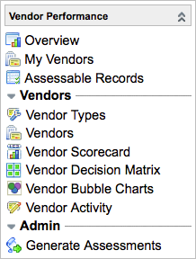

Vendor Performance
| |
Note: This article applies to Fuji and earlier releases. For more current information, see Vendor Performance at http://docs.servicenow.com
The ServiceNow Wiki is no longer being updated. Visit http://docs.servicenow.com for the latest product documentation. |
Contents
1 Overview
The Vendor Performance application helps an organization manage, evaluate, and compare the companies that are labeled as vendors in ServiceNow. Many of the following vendor performance features depend on assessment functionality:
- Vendor assessments: Evaluate, score, and rank any vendor in the system.
- Manage specific vendors: Identify vendor managers for specific vendors. These managers can see the list of their vendors and the results of vendor assessments.
- Vendor scorecards: View current summary information about a vendor’s performance, including related incidents, assets, purchase agreements, discounts, outages, breaches, and other information that vendor managers need.
- Vendor decision matrixes: View a two-axis graph that plots assessment results for multiple vendors. Use decision matrixes to determine the relative standing of vendors in two or more selected categories.
- Vendor bubble charts: View a three-axis graph that plots assessment results for multiple vendors. Use bubble charts to determine the relative standing of vendors in three selected categories, with an emphasis on one category. Bubble charts are available starting with the Eureka release.
- Vendor contacts: Create vendor contacts for individuals who provide support on behalf of the vendor, such as customer service representatives, support technicians, and vendor contractors.
- Vendor activities: Track important vendor events, such as demos, trade show interactions, and meetings.
Vendor performance also includes information from vendor ticketing, if this feature is enabled.
The Vendor Performance application is available starting with the Dublin release.
2 Vendor Performance Process
To get the most out of vendor performance, assign appropriate user roles, set up vendor data, and set up vendor assessments. After the initial setup, keep vendor data up to date and maintain an assessment cycle that works for your organization. Evaluate your vendors periodically to help make better business decisions based on vendor performance statistics.
2.1 Assign Roles
Assign the vendor_manager role to users who are involved with your organization's vendor management process and who need to use vendor performance modules. Assign the assessment_admin role to users who you need to set up vendor assessments. Vendor managers cannot view the Assessments application menu or modules, though they can view vendor assessment records by navigating directly to the tables. You may want to assign both the vendor_manager and assessment_admin roles to certain users so they can manage vendor assessments as well as other vendor information.
2.2 Set Up Vendor Data
In ServiceNow, vendors are company records that have the Vendor check box selected. Ensure that each vendor is properly defined on the Company form. Navigate to Vendor Performance > Vendors to view all companies designated as vendors and ensure that the companies you want to evaluate in vendor performance are present on the list. You can create vendor types to help classify vendors. Create new vendors and add information, such as vendor type, to existing vendors as necessary. Vendor performance adds the Vendor view of the Company form, which contains fields that are not visible in other views by default. Though not required, you can assign users as vendor managers for specific vendors. These users can quickly view a filtered list of vendors for which they are vendor managers.
Also consider creating vendor contacts and vendor activities to keep track of important people and events related to vendors.
2.3 Set Up Vendor Assessments
Have an assessment administrator configure vendor assessments so you can evaluate vendors using questionnaires and scripted database queries. Examples of setup tasks include setting an assessment generation schedule for recurring assessments, associating users to categories or vendors they are knowledgeable about, and creating decision matrixes.
2.4 Evaluate Vendors
After the initial setup, generate assessments. Users complete questionnaires and the system runs scripted queries to obtain results for vendors. When you have assessment results, view vendor decision matrixes, bubble charts, and scorecards, tools to help visualize vendor performance over time and relative to other vendors. The information presented in decision matrixes, bubble charts, and scorecards updates dynamically to reflect current data.
3 Roles
The Vendor Performance application uses the following roles.
| Role Title | Role Name | Description |
|---|---|---|
| Vendor manager | vendor_manager | Vendor managers are involved with the organization's vendor management process, configure vendor records, and need to access the key performance information generated in vendor performance assessments. |
| ITIL user | itil | ITIL users perform basic technician operations in the system. In the Vendor Performance application, ITIL users can use the Vendor Activity module to track important vendor-related events. ITIL users can also view vendor scorecards and decision matrixes using the related links on the Company form. |
| Assessment administrator | assessment_admin | Assessment administrators configure assessments to evaluate vendors. |
| Administrator | admin | Administrators have access to all aspects of the vendor performance and assessment processes. Only administrators can set up vendor assessment schedules. |
4 Menus and Modules
Activating the plugin adds the Vendor Performance application menu to the application navigator, with the following modules.
|  |
|
{kind=link}
| |
Note: Activating the vendor ticketing feature adds the Vendor Credits module to this menu. |
5 Activating Vendor Performance
An administrator can activate the Vendor Performance plugin to access the application.
| Click the plus to expand instructions for activating a plugin. |
|---|
|
If you have the admin role, use the following steps to activate the plugin.
|
6 Enhancements
6.1 Eureka
- Bubble charts provide a way for vendor managers to compare vendor performance in three different categories at a time.